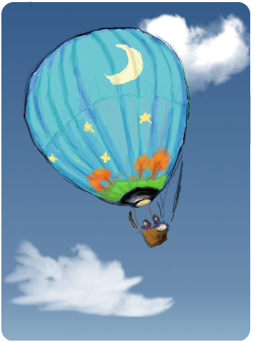

In our free time, we enjoy goofing off on the piano! Here's a clip -enjoy!
Meet the Girls in the Balloon!
Thanks for taking a look through our website! Right now, we're both high school seniors at the Plymouth Canton Educational Park. A year ago, HTML and CSS were just scary acronyms, and notepad was an unused icon burried deep inside our computer. However, after a year filled with coding, computer programming classes, searching for lost semicolons, copious amounts of caffeine, and an amazing Comerica Internship, we've certainly changed! In our free time, we enjoy hanging out with friends (and catching up on sleep!) We're looking foward to college next year and going into technology-related fields.Past Computer Classes:
Computer Programing I & II
AP Java (in progress)
We hope you enjoyed our site!
~ Annie Fu & Rachel Xiang

Extra Information & Fact Sources:
-
More About Survival
- Think you have what it takes? A Survival Quiz
- A Wonderful Survival Guide
- Curious about our wildlife? Department of Natural Rescources
- Planning a trip? Hunt's Great UP Travel Guide
- Michigan Challenge Balloonfest
- Go on your very own "Sky Adventure"
More About Michigan's Upper Peninsula
More About Hot Air Balloons in Michigan
Image and Code Resources:
This website was only possible due to these amazing resources below, and MCWT's support. Thank you!
This website was only possible due to these amazing resources below, and MCWT's support. Thank you!
- The hot air balloon image, navigation icons, and background were created by ourselves using GIMP.
- All of the following images were found on stock.xchng. We are allowed to use the images in "in digital format on websites."
- "Lake in Autumn Forest." Photo. sxc.hu Oct 14, 2012 (http://www.sxc.hu/photo/1340683)
- "Autumn Forest." Photo. sxc.hu April 14, 2012 (http://www.sxc.hu/photo/1385992)
- "Autumn Rush." Photo. sxc.hu Jan 28, 2012 (http://www.sxc.hu/photo/1377811)
- "Orange Forest Sunrise Flare." Photo. sxc.hu Aug 26, 2011 (http://www.sxc.hu/photo/1362249)
- "Balloon Mania." Photo. sxc.hu Nov 7, 2006 (http://www.sxc.hu/photo/654973)
- "River Reflecting Golden Sunlight" Photo. sxc.hu June 12, 2012 (http://www.sxc.hu/photo/1391846)
- "Fire 1." Photo. sxc.hu Oct 27, 2012 (http://www.sxc.hu/photo/1404809)
- "Paths of Fire 2." Photo. sxc.hu Aug 14, 2012 (http://www.sxc.hu/photo/1398122)
- "Foguiera." Photo. sxc.hu July 1, 2012 (http://www.sxc.hu/photo/1393268)
- "Fire." Photo. sxc.hu March 4, 2012 (http://www.sxc.hu/photo/1381897)
- "Brown Bear Portrait." Photo. sxc.hu Oct 27, 2012 (http://www.sxc.hu/photo/1404818)
- "Fire Helicopter." Photo. sxc.hu Aug 28, 2012 (http://www.sxc.hu/photo/859496)
- "The Picnic" Photo. deviantart.com June 8, 2008 (http://streetxwise.deviantart.com/art/The-Picnic-88098641)
- Social Media Icons thanks to DesignDeck
- We modified source code from menucool to create a javascript slideshow on the front page. We changed the size, the number of slides, added captions etc.
- We also used the Jquery javascript library (found here )and the garagedoor function from gayadesign to create the navigation animation. We modified the effect by changing the size, adding our own icons, adding our links so it would look like the icons were simply "bumping" upwards instead of being like a "garage door."